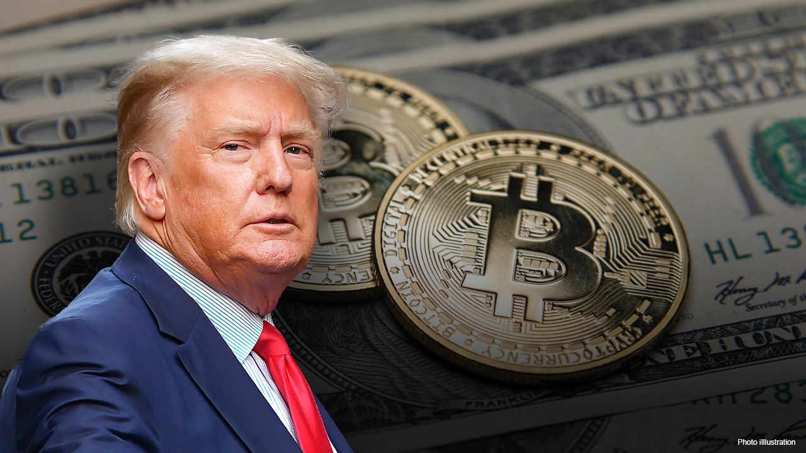

Latest News
WASHINGTON: US President-elect Donald Trump has launched his own cryptocurrency, appropriately called $TRUMP, sparking feverish buying that sent its market capitalization soaring on Saturday to several billion dollars. In a message posted on his Truth Social platform and X, Trump unveiled the so-called meme coin, which is designed to capitalize on the popularity of a certain personality, movement or viral internet trend. Meme coins have no economic or transactional value, and are often seen as a means of speculative trading. “This Trump Meme celebrates a leader who doesn’t back down, no matter the odds,” says the coin’s official site, which refers to the assassination attempt against the Republican in July 2024. In the hours following the overnight launch, the crypto community posed questions about the legitimacy of the $TRUMP coin, and its actual link to the president-elect, with some fearing a scam.
